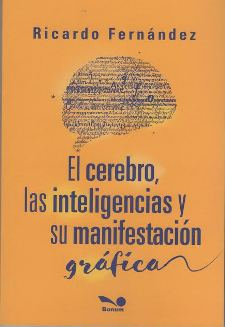

El cerebro, las inteligencias y su
manifestación gráfica
ººº
|
 |
Introducción
Este libro acompaña el desarrollo que han tenido las Neurociencias en los
últimos 20 años.
La grafología, la psicología, psicopedagogía, etc, como disciplinas no
pueden estar ajenas a estos cambios, ya que cuando escribimos o dibujamos,
el que el escribe o dibuja es el cerebro. La mano sólo ejecuta la orden que
le da su superior.
El cerebro, envía información a través de las neuronas, conectadas desde sus
diferentes órganos, con el correspondiente mensaje químico y eléctrico, para
que la mano ejecute el movimiento que de origen al resultado final, que es
lo que se observa materializado en el espacio de la hoja, como un escrito.
Ese cerebro, guarda toda la información racional y emocional de la vida del
escribiente, en los diferentes órganos que forman el sistema límbico,
pequeña zona ubicada en el interior del cerebro. Allí almacena alegrías,
tristezas, depresiones, miedos, perdidas, sorpresas, amor, odio,
resignación, etc, etc, etc.
La escritura no es otra cosa que la muestra de todo lo que acontece en el
cerebro del escribiente. Analizando los rasgos que presenta el grafismo de
una persona, se puede estudiar lo que acontece en ese sistema nervioso.
En la actualidad sabemos que las emociones son importantes en la vida,
llevan a decisiones a veces acertadas, otras erradas, y juegan un papel
primordial en todo lo que acontece en cada ser humano.
Por ello, este libro habla sobre lo que hoy no se puede desconocer, a partir
de los trabajos de Goleman: la inteligencia emocional como central en la
vida de una persona, las inteligencias múltiples desarrolladas por Gardner.
Antiguamente una persona era inteligente cuando respondía bien a los tests
diseñados para ese efecto, que estaban pensados con ejercicios matemáticos o
lingüísticos. Quien los resolvía era inteligente, y, él que no lo lograba,
no era bien visto en ámbitos académicos.
Hoy podemos decir que todos somos inteligentes, aunque cada uno desarrolla
diferentes aptitudes, de acuerdo a sus emociones, que hace que alguien se
vuelque hacia la música, la literatura, la naturaleza, etc. Utiliza sus
potencialidades hacia aquello que es de su interés y falla en aquellas
cuestiones que no le despiertan ningún tipo de motivación.
En el transcurso del día, se utilizan los diferentes tipos de inteligencia,
aunque no se las use para explotarlas en actividades. Cuando alguien a la
mañana toma el colectivo para ir a su trabajo, está usando la inteligencia
espacial para no perderse; al pagar el colectivo y ve si tiene saldo en la
sube, está usando la lógico matemática. En el momento que el colectivero
pone la radio con música, está usando la musical para apreciar la melodía;
cuando escribe un mail en su trabajo, está usando la lingüística; cuando se
relaciona con sus compañeros, aparece la interpersonal y cuando piensa en
algún problema personal a resolver, maneja la intrapersonal.
Por ende todo el tiempo usamos todas las inteligencias disponibles, pero no
las desarrollamos al nivel de precisión que requieren las actividades o
profesiones ligadas a ellas. Sólo alguna de ellas, o más de una se puede
destacar en cada uno de nosotros. Lo bueno sería descubrirlas, para
aprovecharlas.
Este libro trata de acercar la idea, de que, desde el análisis del grafismo
de una persona, se puede ver si tiene inteligencia emocional y el tipo de
inteligencia predominante.
Descubrir esto es importante, porque ayuda a la persona a orientarse en su
vida, saber hacia qué áreas de interés puede volcarse, con mayores
probabilidades de éxito.
Para ello vamos a recorrer algunas teorías que nos van acercando a los
conceptos que quiero desarrollar.
Se desarrolla cómo funciona el cerebro y su relación con las características
de personalidad. Hay conceptos de neurociencias tomados de autores como
Facundo Manes, Joe Dispenza, Antonio Damasio, Norberto Abdala, etc.
La Inteligencia emocional y social, desarrollados por Goleman. Se hará
referencia a otros autores que tomaron el tema como F. Campelo entre otros.
Al final se trabaja sobre las Inteligencias múltiples desarrolladas por
Gardner.
Todo está relacionado con los grafismos que hablan de las características de
las personas estudiadas.
|
| |
|